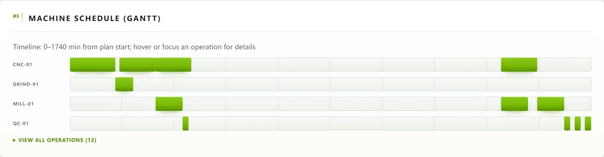
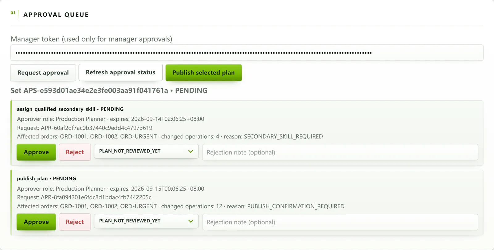
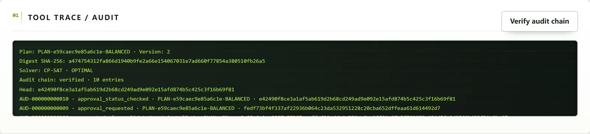

01 AI agent · NUS-ISS hackathon · team of 4 · Sep 2026
A planning agent that can’t approve its own plans
Planners ask in plain English. Claude explains; a CP-SAT solver builds the schedules, an independent validator re-checks them, and only a person with the right role can publish.
My part: runtime authority, validator, solver, Bedrock binding

The LLM explains. Code decides.Dashed step is the only one the model touches.
- InterpretClaude → JSON intent
- SolveCP-SAT, fixed seed
- Validate13 constraints, fail closed
- Approverole-gated, then publish


- Python
- OR-Tools CP-SAT
- AWS Bedrock
- SQLite
- Docker